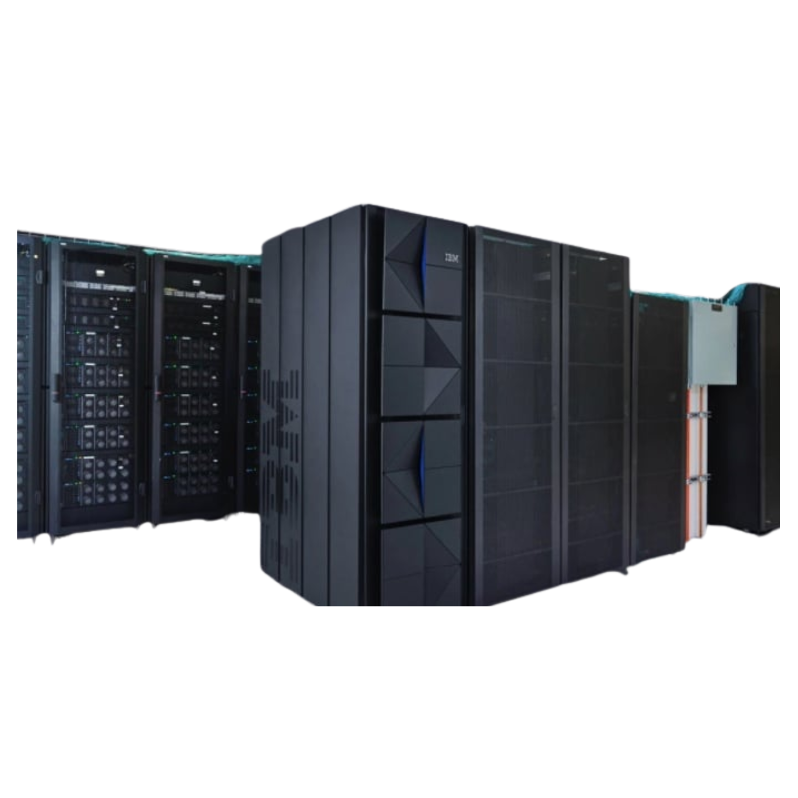
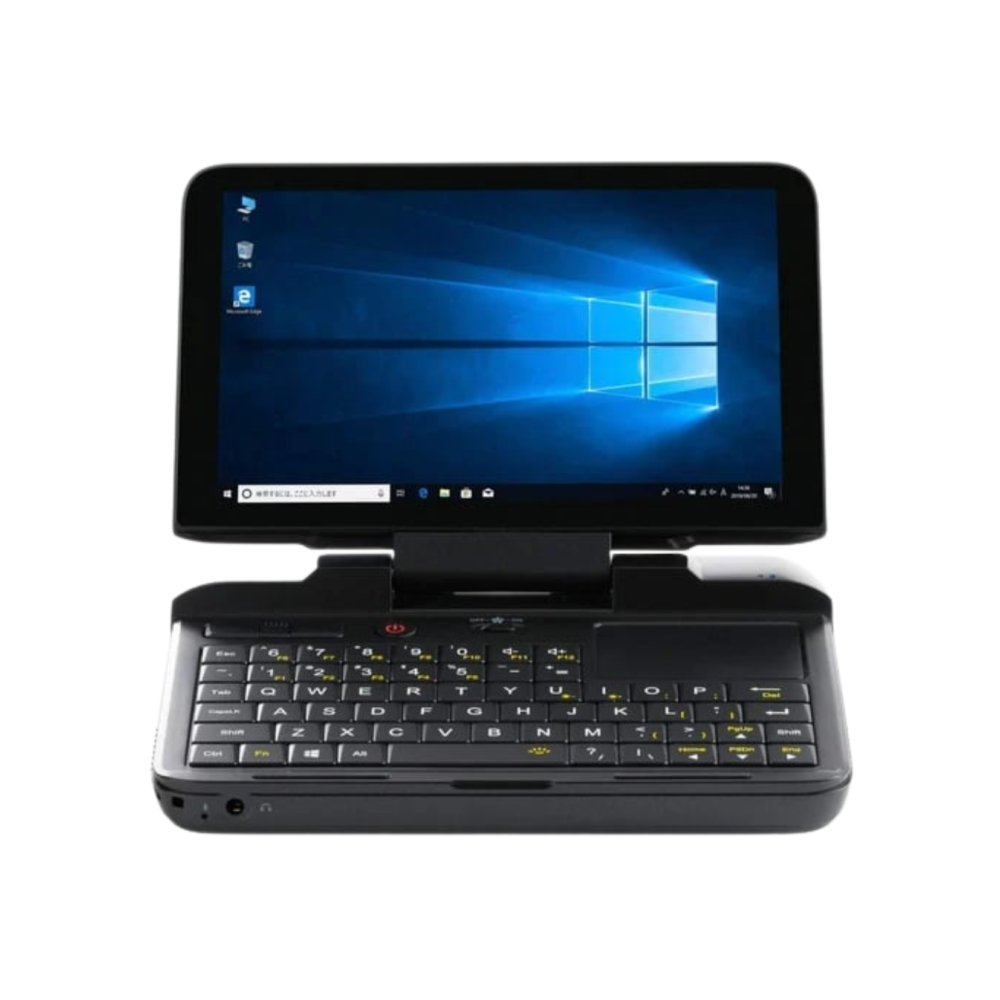
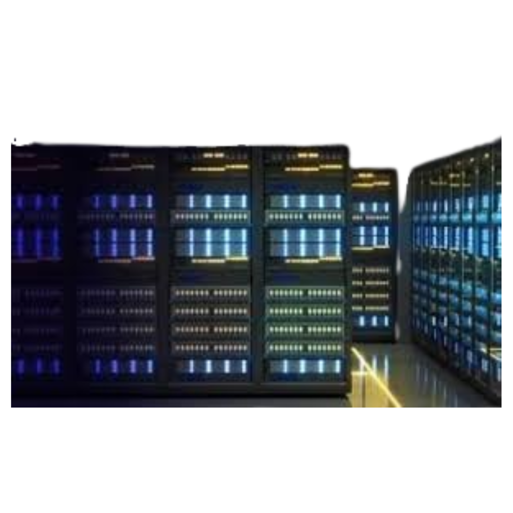
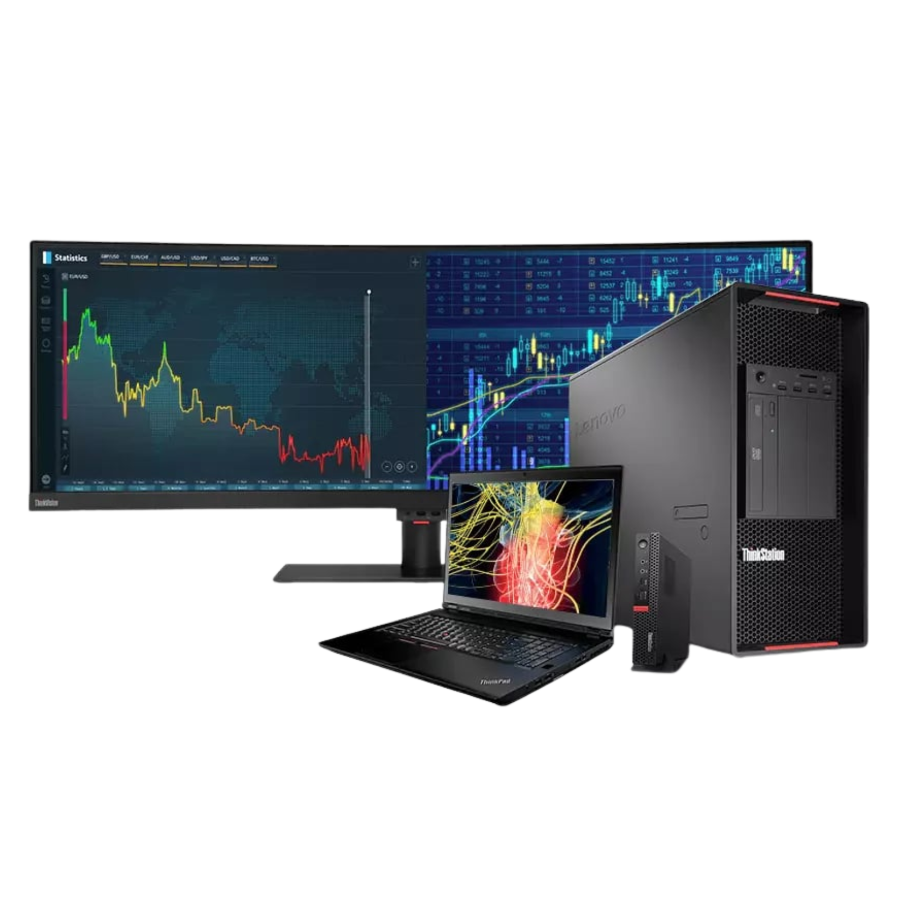
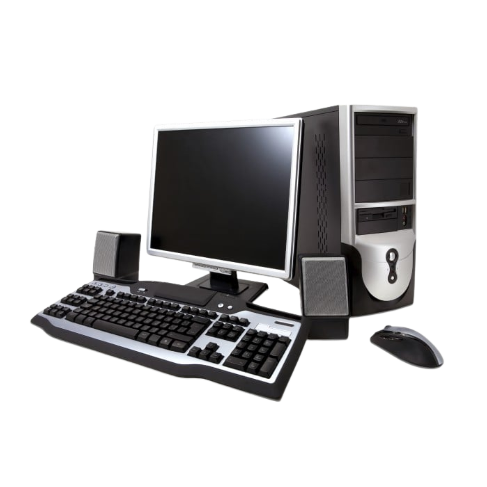

★ Level 6 ★
PORTFOLIO 6
Comparative Study On Different Types Of Computers
OBJECTIVES FOR THIS LEVEL:
► Introduction
► Discussion
► Table 1
► Table 2
► Mini Computer, Micro Computer, Workstation, and Server
INTRODUCTION
A computer is an electronic device that has the ability to store, process, and retrieve data. It executes and responds to a set of instructions and combines hardware and software to perform certain tasks. Nowadays, it is used in various industries and has become an indispensable part of human development.
DISCUSSION
Computers are designed to handle specific jobs but a single computer is not enough to meet the unique needs of the people. Because of this, there are various types of computers.
• A supercomputer is considered the biggest and fastest type of computer and is used for specialized applications that require large amounts of mathematical computation, scientific simulations, weather forecasting, nuclear energy research, and more. It can process trillions of functions within a few seconds. An example of this is the Selene (NVIDIA), which has a memory of 1 TB and has extremely high calculating power.
• A mainframe computer is a powerful computer that is useful when a large number of people are involved. It is popular for its security, reliability, and its ability to manage immense workloads. It is designed to process large amounts of data and perform many transactions quickly and efficiently. An example of this is the IBM z16 with a memory of 40 TB and high energy consumption.
• A Mini Computer is smaller and less powerful than the previous two. It is a multiprocessing system that can support 200 users simultaneously and is mainly used for scientific research, and organizations such as accounting firms. An example of this is the PDP-11 with a Moderate Calculating power and a memory of 4 MB
• A Computer Server is used to store, manage, and distribute data or services to client computers inside a network. It is a powerful device that can provide various services such as web hosting and network storage. An example of it is the Dell PowerEdge that has a moderate energy consumption and a memory of 64 GB to 2 TB
• A workstation is a high-powered computer built for one user to accomplish heavy tasks such as animating and designing buildings. It is smaller than a mainframe computer but stronger than a personal computer. An example of this is Apple MacBook Pro with a memory of 32 GB and a high calculating power.
• Micro Computers are also known as personal computers. It is designed for personal use and can perform basic functions of the computer. It is usually not advised for complicated tasks due to its limited processing capacity. It usually requires minimal space and is inexpensive compared to previous types of computers mentioned. An example of this is the Dell OptiPlex with a memory of 32 GB and low energy consumption.
Learning about these types of computers are a step in understanding how each one has a specific function depending on its functions and power. This shows how technology is constantly evolving to meet the unique needs of people and organizations. There is no “better” computer as they all have their own strengths and have specific purposes.
TABLE 1
| Types of Computers | Name/Brand | CPU | Memory | Processing Speed | Calculating Power | Working Principle | Energy Consumption | Field of Use |
|---|---|---|---|---|---|---|---|---|
| Supercomputer | Selene (NVIDIA) | Dual AMD Rome 7742 | 1 TB | 63:46 Petaflops | Extremely High | Parallel processing | 265 MW | Medical Research, Autonomous Systems, Artificial Intelligence |
| Mainframe Computers | IBM z16 | IBM Telum processor | 40 TB | 5.2 GHz | Very high | Batch & timesharing | High | Banking, enterprise, government |
| Mini Computers | PDP-11 | 16-bit processor | 4 MB | 1 MHz | Moderate | Multi-user | Medium | Scientific labs, organizations |
| Mini Computers | PDP-11 | 16-bit processor | 4 MB | 1 MHz | Moderate | Multi-user | Medium | Scientific labs, organizations |
| Server | Workstations | Apple MacBook Pro | 16 - 36 GB | 5.6 MHz | High | Real-time interactive | Moderate | Graphic design, video editing, engineering, architecture |
| Micro Computers | Dell OptiPlex | Intel Core i5/i7 | 32 GB | 4.5 MHz | Moderate | Stored-program | Low | Personal, school, office use |
TABLE 2
| Types of Computers | Sample Image | Description | Usage |
|---|---|---|---|
| Supercomputer |

|
• Fastest, largest, and most powerful • Performs trillions of calculations • Handles massive data |
Scientific research, AI, Weather Forecasting |
| Mainframe Computer |  |
• Powerful and fast • Processes large amounts of data • Used by thousands of users |
Banking, Corporations, Government |
| Mini Computers |  |
• Smaller than mainframe but more powerful than personal computers • Can handle hundreds of users |
Small businesses, Manufacturing plants for control systems, Scientific computations. |
| Server |  |
• Powerful computer • Provides various services and resources within a network • Used to store, manage, and distribute data |
Web hosting, Email management, File sharing in organizations |
| Workstations |  |
• A high-powered computer designed for one user to finish heavy tasks • Used for applications that need a moderate amount of computing power and high quality graphics • lso connected to the localarea network |
Engineers, Architects, video editors, Multimedia editing |
| Micro Computers |  |
• Requires less space • Compact and versatile • Designed for individual use • Affordable compared to other types |
Home, school, offices |
MINI COMPUTER, MICRO COMPUTER, WORKSTATION, AND SERVER
Mini computers, microcomputers, workstation, and servers have different processing speed, memory capacity, power consumption, and usage. Mini Computers have moderate processing speed and memory which can support several users and perform tasks simultaneously, thus require stable power and proper cooling, This type of computer is suitable for laboratories and small organizations. Micro computers, also considered as personal computers, are intended for single users and basic tasks which is why they have lower processing speed and memory capacity and require less power. They are usually used at home and at offices. Workstation computers, however, are more powerful than personal computers as they are designed for professionals who require large memory and powerful graphic capabilities for tasks such as 3D modeling and engineering design. On the other hand, Servers have the highest processing speed and memory capacity among these and are built to handle multiple users and large amounts of data. Because of this, they also consume the most power in order to provide services such as web hosting and storage. To summarize, all four computers have their own strengths and weaknesses, but they vary in power, performance, and purpose.
You Completed Level 6!
Rewards: 100 IQ + 700 GOLD + FLAT 1 FOR ALL SUBJECTS